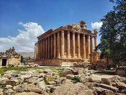
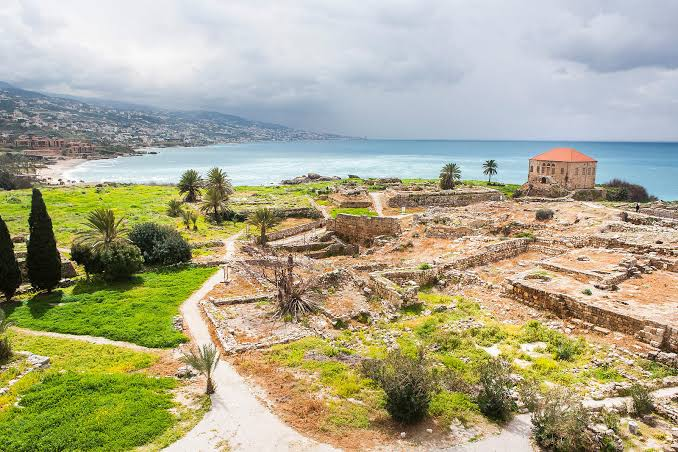

Baalbek
Home to some of the largest and best-preserved Roman temple ruins in the world, including the massive Temple of Jupiter.
View on Google Maps
My Lebanon Guide
From Roman ruins to hidden caves, Lebanon packs a huge amount of history into a very small country.
Home to some of the largest and best-preserved Roman temple ruins in the world, including the massive Temple of Jupiter.
View on Google Maps
One of the oldest continuously inhabited cities on Earth, with an old harbour, a medieval castle, and Phoenician ruins.
View on Google Maps
A pair of limestone caves outside Beirut — an upper gallery you walk through, and a lower one you cross by boat.
View on Google Maps
A protected forest of ancient cedar trees high in Mount Lebanon, the same tree pictured on the national flag.